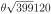
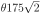
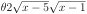
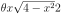
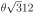
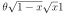
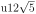

Section 6.9 Trigonometric Substitution
Subsection 6.9.1 Trigonometric Substitution
In this section we discuss substitutions that simplify integrals containing square roots of the form
When the integrand contains one of these square roots, then we can use trigonometric substitutions to eliminate them. That is, we substitute
and then use trigonometric identities
to simplify the result. To be more precise, we can
- eliminate \(\sqrt{a^2-x^2}\) from an integrand by substituting \(x=a\sin u\) to give\begin{gather*} \sqrt{a^2-x^2}=\sqrt{a^2-a^2\sin^2 u} =\sqrt{a^2\cos^2 u}=|a\cos u| \end{gather*}
- eliminate \(\sqrt{a^2+x^2}\) from an integrand by substituting \(x=a\tan u\) to give\begin{gather*} \sqrt{a^2+x^2}=\sqrt{a^2+a^2\tan^2 u} =\sqrt{a^2\sec^2 u}=|a\sec u| \end{gather*}
- eliminate \(\sqrt{x^2-a^2}\) from an integrand by substituting \(x=a\sec u\) to give\begin{gather*} \sqrt{x^2-a^2}=\sqrt{a^2\sec^2u-a^2} =\sqrt{a^2\tan^2 u}=|a\tan u| \end{gather*}Be very careful with signs and absolute values when using this substitution. See Example 6.9.6.
When we have used substitutions before, we usually gave the new integration variable, \(u\text{,}\) as a function of the old integration variable \(x\text{.}\) Here we are doing the reverse — we are giving the old integration variable, \(x\text{,}\) in terms of the new integration variable \(u\text{.}\) We may do so, as long as we may invert to get \(u\) as a function of \(x\text{.}\) For example, with \(x=a\sin u\text{,}\) we may take \(u=\arcsin\frac{x}{a}\text{.}\) This is a good time for you to review the definitions of \(\arcsin\theta\text{,}\) \(\arctan\theta\) and \(\arcsec\theta\text{.}\) See Section 2.12, “Inverse Functions”, of the CLP-1 text.
As a warm-up, consider the area of a quarter of the unit circle.
Example 6.9.1. Quarter of the unit circle.
Compute the area of the unit circle lying in the first quadrant.
Solution: We know that the answer is \(\frac\pi4\text{,}\) but we can also compute this as an integral — we saw this way back in Example 6.1.16:
- To simplify the integrand we substitute \(x=\sin u\text{.}\) With this choice \(\diff{x}{u}=\cos u\) and so \(\dee{x}=\cos u \dee{u}\text{.}\)
- We also need to translate the limits of integration and it is perhaps easiest to do this by writing \(u\) as a function of \(x\) — namely \(u(x)=\arcsin x\text{.}\) Hence \(u(0)=0\) and \(u(1)=\frac{\pi}{2}\text{.}\)
- Hence the integral becomes\begin{align*} \int_0^1 \sqrt{1-x^2}\dee{x} &= \int_0^{\frac{\pi}{2}} \sqrt{1-\sin^2u} \cdot \cos u \dee{u}\\ &= \int_0^{\frac{\pi}{2}} \sqrt{\cos^2u} \cdot \cos u \dee{u}\\ &= \int_0^{\frac{\pi}{2}} \cos^2 u \dee{u} \end{align*}Notice that here we have used that the positive square root \(\sqrt{\cos^2 u} = |\cos u|=\cos u\) because \(\cos(u)\geq 0\) for \(0 \leq u \leq \frac\pi2\text{.}\)
- To go further we use the techniques of Section 6.8.\begin{align*} \int_0^1 \sqrt{1-x^2}\dee{x} &= \int_0^{\frac{\pi}{2}}\cos^2 u \dee{u} \qquad\qquad \text{and since $\cos^2u=\frac{1+\cos2u}{2}$}\\ &= \frac{1}{2}\int_0^{\frac{\pi}{2}} (1+\cos(2 u)) \dee{u}\\ &= \frac{1}{2} \bigg[u + \frac{1}{2}\sin(2u) \bigg]_0^{\frac{\pi}{2}}\\ &= \frac{1}{2} \left(\frac{\pi}{2}-0 + \frac{\sin\pi}{2}-\frac{\sin 0}{2} \right)\\ &= \frac{\pi}{4}\checkmark \end{align*}
Example 6.9.2. \(\int \frac{x^2}{\sqrt{1-x^2}}\dee{x}\).
Solution: We proceed much as we did in the previous example.
- To simplify the integrand we substitute \(x=\sin u\text{.}\) With this choice \(\diff{x}{u}=\cos u\) and so \(\dee{x}=\cos u \dee{u}\text{.}\) Also note that \(u=\arcsin x\text{.}\)
- The integral becomes\begin{align*} \int \frac{x^2}{\sqrt{1-x^2}}\dee{x} &= \int \frac{\sin^2u}{\sqrt{1-\sin^2u}} \cdot \cos u \dee{u}\\ &= \int \frac{\sin^2u}{\sqrt{\cos^2u}} \cdot \cos u \dee{u} \end{align*}
- To proceed further we need to get rid of the square-root. Since \(u=\arcsin x\) has domain \(-1\leq x \leq 1\) and range \(-\frac\pi2 \leq u \leq \frac\pi2\text{,}\) it follows that \(\cos u \geq 0\) (since cosine is non-negative on these inputs). Hence\begin{align*} \sqrt{\cos^2u} &= \cos u & \text{when $-\frac\pi2 \leq u \leq \frac\pi2 $} \end{align*}
- So our integral now becomes\begin{align*} \int \frac{x^2}{\sqrt{1-x^2}}\dee{x} &= \int \frac{\sin^2u}{\sqrt{\cos^2u}} \cdot \cos u \dee{u}\\ &= \int \frac{\sin^2u}{\cos u} \cdot \cos u \dee{u}\\ &= \int \sin^2u \dee{u}\\ &= \frac{1}{2} \int (1-\cos 2u) \dee{u} \qquad \text{by Equation }\knowl{./knowl/eq_TRGINTtrigidentityF.html}{\text{6.8.4}}\\ &= \frac{u}{2} - \frac{1}{4}\sin 2u +C\\ &= \frac{1}{2}\arcsin x - \frac{1}{4} \sin(2\arcsin x) +C \end{align*}
- We can simplify this further using a double-angle identity. Recall that \(u = \arcsin x\) and that \(x=\sin u\text{.}\) Then\begin{align*} \sin 2u &= 2 \sin u \cos u\\ \\ \end{align*}Thus our solution is
We can replace \(\cos u\) using \(\cos^2u = 1 - \sin^2u\text{.}\) Taking a square-root of this formula gives \(\cos u= \pm \sqrt{1-\sin^2u}\text{.}\) We need the positive branch here since \(\cos u \geq 0\) when \(-\frac\pi2 \leq u \leq \frac\pi2\) (which is exactly the range of \(\arcsin x\)). Continuing along:
\begin{align*} \sin2u &= 2 \sin u \cdot \sqrt{1-\sin^2 u}\\ &= 2 x \sqrt{1-x^2} \end{align*}\begin{align*} \int \frac{x^2}{\sqrt{1-x^2}}\dee{x} &= \frac{1}{2}\arcsin x - \frac{1}{4} \sin(2\arcsin x) +C\\ &= \frac{1}{2}\arcsin x - \frac{1}{2} x \sqrt{1-x^2} +C \end{align*}
The above two example illustrate the main steps of the approach. The next example is similar, but with more complicated limits of integration.
Example 6.9.3. \(\int_a^r\sqrt{r^2-x^2}\dee{x}\).
Let's find the area of the shaded region in the sketch below.

We'll set up the integral using vertical strips. The strip in the figure has width \(\dee{x}\) and height \(\sqrt{r^2-x^2}\text{.}\) So the area is given by the integral
Which is very similar to the previous example.
Solution:
- To evaluate the integral we substitute\begin{align*} x&=x(u)=r\sin u & \dee{x} &= \diff{x}{u} \dee{u} =r\cos u\dee{u} \end{align*}It is also helpful to write \(u\) as a function of \(x\) — namely \(u =\arcsin\frac{x}{r}\text{.}\)
- The integral runs from \(x=a\) to \(x=r\text{.}\) These correspond to\begin{align*} u(r) &= \arcsin \frac{r}{r} = \arcsin 1 = \frac{\pi}{2}\\ u(a) &= \arcsin \frac{a}{r} \quad \text{ which does not simplify further} \end{align*}
- The integral then becomes\begin{align*} \int_a^r \sqrt{r^2-x^2} \dee{x} &= \int_{\arcsin(a/r)}^{\frac\pi2} \sqrt{r^2-r^2\sin^2u} \cdot r \cos u \dee{u}\\ &= \int_{\arcsin(a/r)}^{\frac\pi2} r^2 \sqrt{1-\sin^2u} \cdot \cos u \dee{u}\\ &= r^2\int_{\arcsin(a/r)}^{\frac\pi2} \sqrt{\cos^2u} \cdot \cos u \dee{u} \end{align*}To proceed further (as we did in Examples 6.9.1 and 6.9.2) we need to think about whether \(\cos u\) is positive or negative.
- Since \(a\) (as shown in the diagram) satisfies \(0 \leq a \leq r\text{,}\) we know that \(u(a)\) lies between \(\arcsin(0)=0\) and \(\arcsin(1)=\frac\pi2\text{.}\) Hence the variable \(u\) lies between \(0\) and \(\frac\pi2\text{,}\) and on this range \(\cos u \geq 0\text{.}\) This allows us get rid of the square-root:\begin{gather*} \sqrt{\cos^2u} = |\cos u| = \cos u \end{gather*}
- Putting this fact into our integral we get\begin{align*} \int_a^r \sqrt{r^2-x^2} \dee{x} &= r^2\int_{\arcsin(a/r)}^{\frac\pi2} \sqrt{\cos^2u} \cdot \cos u \dee{u}\\ &= r^2 \int_{\arcsin(a/r)}^{\frac\pi2} \cos^2 u \dee{u}\\ \end{align*}Oof! But there is a little further to go before we are done.
Recall the identity \(\cos^2u=\frac{1+\cos2u}{2}\) from Section 6.8
\begin{align*} &= \frac{r^2}{2} \int_{\arcsin(a/r)}^{\frac\pi2} (1 +\cos 2u) \dee{u}\\ &= \frac{r^2}{2} \bigg[u + \frac{1}{2}\sin(2u) \bigg]_{\arcsin(a/r)}^{\frac\pi2}\\ &= \frac{r^2}{2} \left(\frac{\pi}{2} +\frac{1}{2}\sin\pi - \arcsin(a/r) - \frac{1}{2}\sin( 2\arcsin(a/r)) \right)\\ &= \frac{r^2}{2} \left(\frac{\pi}{2} - \arcsin(a/r) - \frac{1}{2}\sin( 2\arcsin(a/r)) \right) \end{align*} -
We can again simplify the term \(\sin( 2\arcsin(a/r))\) using a double angle identity. Set \(\theta = \arcsin(a/r)\text{.}\) Then \(\theta\) is the angle in the triangle on the right below. By the double angle formula for \(\sin(2\theta)\) (Equation 6.8.2)
\begin{align*} \sin(2\theta)&=2\sin\theta\ \cos\theta\\ &=2\ \frac{a}{r}\ \frac{\sqrt{r^2-a^2}}{r}. \end{align*}
- So finally the area is\begin{align*} \text{area} &= \int_a^r \sqrt{r^2-x^2} \dee{x}\\ &= \frac{r^2}{2} \left(\frac{\pi}{2} - \arcsin(a/r) - \frac{1}{2}\sin( 2\arcsin(a/r)) \right)\\ &= \frac{\pi r^2}{4} - \frac{r^2}{2} \arcsin(a/r) - \frac{a}{2} \sqrt{r^2-a^2} \end{align*}
-
This is a relatively complicated formula, but we can make some “reasonableness” checks, by looking at special values of \(a\text{.}\)
- If \(a=0\) the shaded region, in the figure at the beginning of this example, is exactly one quarter of a disk of radius \(r\) and so has area \(\frac{1}{4}\pi r^2\text{.}\) Substituting \(a=0\) into our answer does indeed give \(\frac{1}{4}\pi r^2\text{.}\)
- At the other extreme, if \(a=r\text{,}\) the shaded region disappears completely and so has area \(0\text{.}\) Subbing \(a=r\) into our answer does indeed give \(0\text{,}\) since \(\arcsin 1=\frac{\pi}{2}\text{.}\)
Example 6.9.4. \(\int_a^r x\sqrt{r^2-x^2}\dee{x}\).
The integral \(\int_a^r x\sqrt{r^2-x^2}\dee{x}\) looks a lot like the integral we just did in the previous 3 examples. It can also be evaluated using the trigonometric substitution \(x= r\sin u\) — but that is unnecessarily complicated. Just because you have now learned how to use trigonometric substitution 1 doesn't mean that you should forget everything you learned before.
Solution: This integral is much more easily evaluated using the simple substitution \(u=r^2-x^2\text{.}\)
- Set \(u=r^2-x^2\text{.}\) Then \(\dee{u}=-2x\dee{x}\text{,}\) and so\begin{align*} \int_a^r x\sqrt{r^2-x^2}\dee{x} &=\int_{r^2-a^2}^0 \sqrt{u}\ \frac{\dee{u}}{-2}\\ &=-\frac{1}{2}\bigg[\frac{u^{3/2}}{3/2}\bigg]_{r^2-a^2}^0\\ &=\frac{1}{3}\big[r^2-a^2\big]^{3/2} \end{align*}
Enough sines and cosines — let us try a tangent substitution.
Example 6.9.5. \(\int\frac{\dee{x}}{x^2\sqrt{9+x^2}}\).
Solution: As per our guidelines at the start of this section, the presence of the square root term \(\sqrt{3^2+x^2}\) tells us to substitute \(x=3\tan u\text{.}\)
- Substitute\begin{align*} x&=3\tan u & \dee{x} &= 3\sec^2 u\dee{u} \end{align*}This allows us to remove the square root:\begin{align*} \sqrt{9+x^2} &=\sqrt{9+9\tan^2u} =3\sqrt{1+\tan^2u} =3\sqrt{\sec^2 u} =3|\sec u| \end{align*}
- Hence our integral becomes\begin{align*} \int \frac{\dee{x}}{x^2\sqrt{9+x^2}} &= \int \frac{3\sec^2 u}{9\tan^2u \cdot 3|\sec u|} \dee{u} \end{align*}
- To remove the absolute value we must consider the range of values of \(u\) in the integral. Since \(x=3\tan u\) we have \(u = \arctan(x/3)\text{.}\) The range 2 of arctangent is \(-\frac{\pi}{2} \leq \arctan \leq \frac{\pi}{2}\) and so \(u=\arctan(x/3)\) will always like between \(-\frac{\pi}{2}\) and \(+\frac{\pi}{2}\text{.}\) Hence \(\cos u\) will always be positive, which in turn implies that \(|\sec u|=\sec u\text{.}\)
- Using this fact our integral becomes:\begin{align*} \int \frac{\dee{x}}{x^2\sqrt{9+x^2}} &= \int \frac{3\sec^2 u}{27 \tan^2u |\sec u|} \dee{u}\\ &= \frac{1}{9}\int \frac{\sec u}{\tan^2u} \dee{u} & \text{since $\sec u \gt 0$} \end{align*}
- Rewrite this in terms of sine and cosine\begin{align*} \int \frac{\dee{x}}{x^2\sqrt{9+x^2}} &= \frac{1}{9}\int \frac{\sec u}{\tan^2u} \dee{u}\\ &= \frac{1}{9} \int \frac{1}{\cos u}\cdot \frac{\cos^2u}{\sin^2 u}\dee{u} = \frac{1}{9} \int \frac{\cos u}{\sin^2 u}\dee{u}\\ \end{align*}
Now we can use the substitution rule with \(y=\sin u\) and \(\dee{y}=\cos u\dee{u}\)
\begin{align*} &= \frac{1}{9} \int \frac{\dee{y}}{y^2} \\ &= -\frac{1}{9y} +C \\ &= -\frac{1}{9\sin u}+C \end{align*} -
The original integral was a function of \(x\text{,}\) so we still have to rewrite \(\sin u\) in terms of \(x\text{.}\) Remember that \(x=3 \tan u\) or \(u=\arctan(x/3)\text{.}\) So \(u\) is the angle shown in the triangle below and we can read off the triangle that
\begin{align*} \sin u &= \frac{x}{\sqrt{9+x^2}}\\ \implies \int\frac{\dee{x}}{x^2\sqrt{9+x^2}} &= -\frac{\sqrt{9+x^2}}{9x} +C \end{align*}
Example 6.9.6. \(\int \frac{x^2}{\sqrt{x^2-1}} \dee{x}\).
Solution: This one requires a secant substitution, but otherwise is very similar to those above.
- Set \(x = \sec u\) and \(\dee{x}=\sec u \tan u \dee{u}\text{.}\) Then\begin{align*} \int \frac{x^2}{\sqrt{x^2-1}} \dee{x} &= \int \frac{\sec^2 u}{\sqrt{\sec^2u-1}} \sec u \tan u \dee{u}\\ &= \int \sec^3 u \cdot \frac{ \tan u}{\sqrt{\tan^2u}} \dee{u} \qquad \text{since $\tan^2u = \sec^2u-1$}\\ &= \int \sec^3u \cdot \frac{\tan u}{|\tan u|} \dee{u} \end{align*}
-
As before we need to consider the range of \(u\) values in order to determine the sign of \(\tan u\text{.}\) Notice that the integrand is only defined when either \(x \lt -1\) or \(x \gt 1\text{;}\) thus we should treat the cases \(x \lt -1\) and \(x \gt 1\) separately. Let us assume that \(x \gt 1\) and we will come back to the case \(x \lt -1\) at the end of the example.
When \(x \gt 1\text{,}\) our \(u=\arcsec x\) takes values in \((0,\frac\pi2)\text{.}\) This follows since when \(0 \lt u \lt \frac\pi2\text{,}\) we have \(0 \lt \cos u \lt 1\) and so \(\sec u \gt 1\text{.}\) Further, when \(0 \lt u \lt \frac\pi2\text{,}\) we have \(\tan u \gt 0\text{.}\) Thus \(|\tan u|=\tan u\text{.}\)
- Back to our integral, when \(x> 1\text{:}\)\begin{align*} \int \frac{x^2}{\sqrt{x^2-1}} \dee{x} &= \int \sec^3u \cdot \frac{\tan u}{|\tan u|} \dee{u}\\ &= \int \sec^3u \dee{u} & \text{since } \tan u\geq 0\\ \end{align*}
This is exactly Example 6.8.22
\begin{align*} &= \frac{1}{2}\sec u \tan u + \frac{1}{2} \log| \sec u + \tan u| +C \end{align*} - Since we started with a function of \(x\) we need to finish with one. We know that \(\sec u = x\) and then we can use trig identities\begin{align*} \tan^2 u &= \sec^2 u - 1 = x^2-1 & \text{so } \tan u &= \pm \sqrt{x^2-1}\\ \end{align*}Thus
but we know
\begin{align*} \tan u & \geq 0 & \text{so } \tan u &= \sqrt{x^2-1} \end{align*}\begin{align*} \int \frac{x^2}{\sqrt{x^2-1}} \dee{x} &= \frac{1}{2}x\sqrt{x^2-1} + \frac{1}{2}\log| x +\sqrt{x^2-1}| +C \end{align*} - The above holds when \(x \gt 1\text{.}\) We can confirm that it is also true when \(x \lt -1\) by showing the right-hand side is a valid antiderivative of the integrand. To do so we must differentiate our answer. Notice that we do not need to consider the sign of \(x+\sqrt{x^2-1}\) when we differentiate since we have already seen that\begin{align*} \diff{}{x} \log|x| &= \frac{1}{x} \end{align*}when either \(x \lt 0\) or \(x \gt 0\text{.}\) So the following computation applies to both \(x \gt 1\) and \(x \lt -1\text{.}\) The expressions become quite long so we differentiate each term separately:\begin{align*} \diff{}{x} \left[ x\sqrt{x^2-1} \right] &=\left[ \sqrt{x^2-1} + \frac{x^2}{\sqrt{x^2-1}} \right]\\ &= \frac{1}{\sqrt{x^2-1}} \left[(x^2-1) + x^2 \right]\\ \diff{}{x} \log\bigg| x +\sqrt{x^2-1} \bigg| &= \frac{1}{x+\sqrt{x^2-1}} \cdot \left[ 1+\frac{x}{\sqrt{x^2-1}} \right]\\ &= \frac{1}{x+\sqrt{x^2-1}} \cdot \frac{x+\sqrt{x^2-1}}{\sqrt{x^2-1}}\\ &= \frac{1}{\sqrt{x^2-1}} \end{align*}Putting things together then gives us\begin{align*} & \diff{}{x} \left[ \frac{1}{2}x\sqrt{x^2-1} + \frac{1}{2}\log| x +\sqrt{x^2-1}| +C \right]\\ &= \frac{1}{2\sqrt{x^2-1}} \left[(x^2-1) + x^2 + 1 \right]+0\\ &= \frac{x^2}{\sqrt{x^2-1}} \end{align*}This tells us that our answer for \(x \gt 1\) is also valid when \(x \lt -1\) and so\begin{align*} \int \frac{x^2}{\sqrt{x^2-1}} \dee{x} &= \frac{1}{2}x\sqrt{x^2-1} + \frac{1}{2}\log| x +\sqrt{x^2-1}| +C \end{align*}when \(x \lt -1\) and when \(x \gt 1\text{.}\)
In this example, we were lucky. The answer that we derived for \(x>1\) happened to be also valid for \(x<-1\text{.}\) This does not always happen with the \(x=a\,\sec u\) substitution. When it doesn't, we have to apply separate \(x>a\) and \(x<-a\) analyses that are very similar to our \(x>1\) analysis above. Of course that doubles the tedium. So in the CLP-2 problem book, we will not pose questions that require separate \(x>a\) and \(x<-a\) computations.
The method, as we have demonstrated it above, works when our integrand contains the square root of very specific families of quadratic polynomials. In fact, the same method works for more general quadratic polynomials — all we need to do is complete the square 3 .
Example 6.9.7. \(\int_3^5\frac{\sqrt{x^2-2x-3}}{x-1}\dee{x}\).
This time we have an integral with a square root in the integrand, but the argument of the square root, while a quadratic function of \(x\text{,}\) is not in one of the standard forms \(\sqrt{a^2-x^2}\text{,}\) \(\sqrt{a^2+x^2}\text{,}\) \(\sqrt{x^2-a^2}\text{.}\) The reason that it is not in one of those forms is that the argument, \(x^2-2x-3\text{,}\) contains a term , namely \(-2x\) that is of degree one in \(x\text{.}\) So we try to manipulate it into one of the standard forms by completing the square.
Solution:
- We first rewrite the quadratic polynomial \(x^2-2x-3\) in the form \((x-a)^2+b\) for some constants \(a,b\text{.}\) The easiest way to do this is to expand both expressions and compare coefficients of \(x\text{:}\)\begin{align*} x^2-2x-3 &= (x-a)^2+b = (x^2-2ax+a^2)+b \end{align*}So — if we choose \(-2a=-2\) (so the coefficients of \(x^1\) match) and \(a^2+b=-3\) (so the coefficients of \(x^0\) match), then both expressions are equal. Hence we set \(a=1\) and \(b=-4\text{.}\) That is\begin{align*} x^2-2x-3 &= (x-1)^2-4 \end{align*}Many of you may have seen this method when learning to sketch parabolas.
- Once this is done we can convert the square root of the integrand into a standard form by making the simple substitution \(y=x-1\text{.}\) Here goes\begin{align*} & \int_3^5\frac{\sqrt{x^2-2x-3}}{x-1}\dee{x}\\ &=\int_3^5\frac{\sqrt{(x-1)^2-4}}{x-1}\dee{x}\\ &=\int_2^4\frac{\sqrt{y^2-4}}{y}\dee{y} &\text{with } y=x-1, \dee{y} = \dee{x}\\ &=\int_0^{\pi/3}\frac{\sqrt{4\sec^2u-4}}{2\sec u}\ 2\sec u\tan u\dee{u} &\text{with } y=2\sec u\\ && \text{and }\dee{y} = 2\sec u\tan u\dee{u} \end{align*}Notice that we could also do this in fewer steps by setting \((x-1)=2\sec u, \dee{x}=2\sec u\tan u\dee{u}\text{.}\)
-
To get the limits of integration we used that
- the value of \(u\) that corresponds to \(y=2\) obeys \(2=y=2\sec u=\frac{2}{\cos u}\) or \(\cos u=1\text{,}\) so that \(u=0\) works and
- the value of \(u\) that corresponds to \(y=4\) obeys \(4=y=2\sec u=\frac{2}{\cos u}\) or \(\cos u=\half\text{,}\) so that \(u=\frac{\pi}{3}\) works.
- Now returning to the evaluation of the integral, we simplify and continue.\begin{align*} \int_3^5\frac{\sqrt{x^2-2x-3}}{x-1}\dee{x} &=\int_0^{\pi/3} 2\sqrt{\sec^2 u -1}\ \tan u\dee{u}\\ &=2\int_0^{\pi/3} \tan^2 u\dee{u} \qquad\text{since } \sec^2u=1+\tan^2u\\ \end{align*}
In taking the square root of \(\sec^2u-1=\tan^2u\) we used that \(\tan u\ge 0\) on the range \(0\le u\le \frac{\pi}{3}\text{.}\)
\begin{align*} &=2\int_0^{\pi/3}\big[ \sec^2 u-1\big]\dee{u} \qquad\quad\text{since $\sec^2u=1+\tan^2u$, again}\\ &=2\Big[\tan u - u\Big]_0^{\pi/3}\\ &=2\big[\sqrt{3}-\frac{\pi}{3}\big] \end{align*}
Exercises 6.9.2 Exercises
Recall that we are using \(\log x\) to denote the logarithm of \(x\) with base \(e\text{.}\) In other courses it is often denoted \(\ln x\text{.}\)
1. 2015A.
For each of the following integrals, choose the substitution that is most beneficial for evaluating the integral.
- \(\displaystyle \displaystyle \int \frac{2x^2}{\sqrt{9x^2-16}} \, \dee{x}\)
- \(\displaystyle \displaystyle \int \frac{x^4-3}{\sqrt{1-4x^2}} \, \dee{x}\)
- \(\displaystyle \displaystyle \int {(25+x^2)}^{-5/2} \, \dee{x}\)
The beginning of this section has a template for choosing a substitution. Your goal is to use a trig identity to turn the argument of the square root into a perfect square, so you can cancel \(\sqrt{(\mbox{something})^2}=|\mbox{something}|\text{.}\)
(a) \(x=\dfrac{4}{3}\sec\theta\)
(b) \(x=\dfrac{1}{2}\sin\theta\)
(c) \(x=5\tan\theta\)
In the text, there is a template for choosing an appropriate substitution, but for this problem we will explain the logic of the choices.
The trig identities that we can use are:
They have the following forms:
\begin{align*} &\mbox{constant } - \mbox{ function} &&\mbox{function } + \mbox{ constant} & &\mbox{function } - \mbox{ constant} \end{align*}In order to cancel out the square root, we should choose a substitution that will match the argument under the square root with the trig identity of the corresponding form.
(a) There's not an obvious non-trig substitution for evaluating this problem, so we want a trigonometric substitution to get rid of the square root in the denominator. Under the square root is the function \(9x^2-16\text{,}\) which has the form (function) \(-\) (constant). This form matches the trig identity \(\sec^2 \theta - 1 = \tan^2 \theta\text{.}\) We can set \(x\) to be whatever we need it to be, but we don't have the same control over the constant, 16. So, to make the substitution work, we use a different form of the trig identity: multiplying both sides by 16, we get
What we want is a substitution that gives us
\begin{align*} 9x^2-16&=16\sec^2\theta - 16\\ \mbox{So,}\qquad 9x^2&=16\sec^2\theta\\ x &= \frac{4}{3}\sec\theta\\ \end{align*}Using this substitution,
\begin{align*} \sqrt{9x^2-16}&=\sqrt{16\sec^2\theta-16}\\ &=\sqrt{16\tan^2\theta}\\ &=4|\tan\theta| \end{align*}So, we eliminated the square root.
(b) There's not an obvious non-trig substitution for evaluating this problem, so we want a trigonometric substitution to get rid of the square root in the denominator. Under the square root is the function \(1-4x^2\text{,}\) which has the form (constant) \(-\) (function). This form matches the trig identity \(1-\sin^2\theta = \cos^2\theta\text{.}\) What we want is a substitution that gives us
Using this substitution,
\begin{align*} \sqrt{1-4x^2}&=\sqrt{1-\sin^2\theta}\\ &=\sqrt{\cos^2\theta}\\ &=|\cos\theta| \end{align*}So, we eliminated the square root.
(c) There's not an obvious non-trig substitution for evaluating this problem, so we want a trigonometric substitution to get rid of the fractional power. (That is, we want to eliminate the square root.) The function under the power is \(25+x^2\text{,}\) which has the form (constant) \(+\) (function). This form matches the trig identity \(\tan^2 \theta + 1 = \sec^2 \theta\text{.}\) We can set \(x\) to be whatever we need it to be, but we don't have the same control over the constant, 25. So, to make the substitution work, we use a different form of the trig identity: multiplying both sides by 25, we get
What we want is a substitution that gives us
\begin{align*} 25+x^2&=25\tan^2\theta+25\\ \mbox{So,}\qquad x^2&=25\tan^2\theta\\ x &= 5\tan\theta\\ \end{align*}Using this substitution,
\begin{align*} (25+x^2)^{-5/2}&=(25+25\tan^2\theta)^{-5/2}\\ &=(25\sec^2\theta)^{-5/2}\\ &=(5|\sec\theta|)^{-5} \end{align*}So, we eliminated the square root.
2.
For each of the following integrals, choose a trigonometric substitution that will eliminate the roots.
- \(\displaystyle \displaystyle\int \dfrac{1}{\sqrt{x^2-4x+1}}\dee{x}\)
- \(\displaystyle \displaystyle\int \dfrac{(x-1)^6}{(-x^2+2x+4)^{3/2}}\dee{x}\)
- \(\displaystyle \displaystyle\int \dfrac{1}{\sqrt{4x^2+6x+10}}\dee{x}\)
- \(\displaystyle \displaystyle\int \sqrt{x^2-x}\dee{x}\)
You want to do the same thing you did in Question 1, but you'll have to complete the square first.
(a) \(x-2=\sqrt{3}\sec u\)
(b) \(x-1=\sqrt{5}\sin u\)
(c) \(\left(2x+\dfrac{3}{2}\right) =\dfrac{\sqrt{31}}{2}\tan u\)
(d) \(x - \dfrac{1}{2}=\dfrac{1}{2}\sec u\)
Just as in Question 1, we want to choose a trigonometric substitution that will allow us to eliminate the square roots. Before we can make that choice, though, we need to complete the square. In subsequent problems, we won't show the algebra behind completing the square, but for this problem we'll work it out explicitly. After some practice, you'll be able to do this step in your head for many cases.
After the squares are completed, the choice of trig substitution follows the logic outlined in the solutions to Question 1, or (equivalently) the template in the text.
-
The quadratic function under the square root is \(x^2-4x+1\text{.}\) To complete the square, we match the non-constant terms to those of a perfect square.
\begin{align*} (ax+b)^2&=a^2x^2+2abx+b^2\\ \textcolor{red}{x^2}-\textcolor{blue}{4x}+1&=\textcolor{red}{a^2x^2} + \textcolor{blue}{2abx} +b^2 + c \quad\mbox{for some constant } c \end{align*}- Looking at the leading term tells us \(a=1\text{.}\)
- Then the second term tells us \(-4=2ab=2b\text{,}\) so \(b=-2\text{.}\)
- Finally, the constant terms give us \(1=b^2+c=4+c\text{,}\) so \(c=-3\text{.}\)
\begin{align*} \int \dfrac{1}{\sqrt{x^2-4x+1}}\dee{x} &=\int \dfrac{1}{\sqrt{(x-2)^2-3}}\dee{x}\\ &=\int \dfrac{1}{\sqrt{(x-2)^2-\sqrt{3}^2}}\dee{x} \end{align*}So we use the substitution \((x-2) = \sqrt{3}\sec u\text{,}\) which eliminates the square root:
\begin{equation*} \sqrt{\left(x-2\right)^2-3}=\sqrt{3\sec^2 u - 3} = \sqrt{3\tan^2 u} = \sqrt{3}|\tan u| \end{equation*} -
The quadratic function under the square root is \(-x^2+2x+4=-[x^2-2x-4]\text{.}\) To complete the square, we match the non-constant terms to those of a perfect square. We factored out the negative to make things a little easier — don't forget to put it back in before choosing a substitution!
\begin{align*} (ax+b)^2&=a^2x^2+2abx+b^2\\ \textcolor{red}{x^2}-\textcolor{blue}{2x}-4&=\textcolor{red}{a^2x^2} + \textcolor{blue}{2abx} +b^2 + c \quad\mbox{for some constant } c \end{align*}- Looking at the leading term tells us \(a=1\text{.}\)
- Then the second term tells us \(-2=2ab=2b\text{,}\) so \(b=-1\text{.}\)
- Finally, the constant terms give us \(-4=b^2+c=1+c\text{,}\) so \(c=-5\text{.}\)
- Then\begin{align*} -x^2+2x+4 &= -[x^2-2x-4]=-[(x-1)^2-5]\\ &=5-(x-1)^2 \end{align*}
\begin{align*} \int \dfrac{(x-1)^6}{(-x^2+2x+4)^{3/2}}\dee{x} &=\int \dfrac{(x-1)^6}{(5-(x-1)^2)^{3/2}}\dee{x}\\ &=\int \dfrac{(x-1)^6}{\left(\sqrt{5}^2-(x-1)^2\right)^{3/2}}\dee{x} \end{align*}So we use the substitution \((x-1) = \sqrt{5}\sin u\text{,}\) which eliminates the square root (fractional power):
\begin{align*} {(5-(x-1)^2)}^{3/2}&={(5-5\sin^2u)}^{3/2} = {(5\cos^2 u)}^{3/2}\\ &= 5\sqrt{5}|\cos^3 u| \end{align*} -
The quadratic function under the square root is \(4x^2+6x+10\text{.}\) To complete the square, we match the non-constant terms to those of a perfect square.
\begin{align*} (ax+b)^2&=a^2x^2+2abx+b^2\\ \textcolor{red}{4x^2}+\textcolor{blue}{6x}+10&=\textcolor{red}{a^2x^2} + \textcolor{blue}{2abx} +b^2 + c \quad\mbox{for some constant $c$} \end{align*}- Looking at the leading term tells us \(a=2\text{.}\)
- Then the second term tells us \(6=2ab=4b\text{,}\) so \(b=\frac{3}{2}\text{.}\)
- Finally, the constant terms give us \(10=b^2+c=\frac{9}{4}+c\text{,}\) so \(c=\frac{31}{4}\text{.}\)
\begin{align*} \int \dfrac{1}{\sqrt{4x^2+6x+10}}\dee{x} &=\int \dfrac{1}{\sqrt{\left(2x+\frac{3}{2}\right)^2+\frac{31}{4}}}\dee{x}\\ &=\int \dfrac{1}{\sqrt{\left(2x+\frac{3}{2}\right)^2+\left(\frac{\sqrt{31}}{2}\right)^2}}\dee{x} \end{align*}So we use the substitution \(\left(2x+\frac{3}{2}\right) =\frac{\sqrt{31}}{2}\tan u\text{,}\) which eliminates the square root:
\begin{align*} \sqrt{\left(2x+\frac{3}{2}\right)^2+\frac{31}{4}} &=\sqrt{\frac{31}{4}\tan^2 u +\frac{31}{4}} = \sqrt{\frac{31}{4}\sec^2 u} \\ &=\frac{\sqrt{31}}{2}|\sec u| \end{align*} -
The quadratic function under the square root is \(x^2-x\text{.}\) To complete the square, we match the non-constant terms to those of a perfect square.
\begin{align*} (ax+b)^2&=a^2x^2+2abx+b^2\\ \textcolor{red}{x^2}-\textcolor{blue}{x}&=\textcolor{red}{a^2x^2} + \textcolor{blue}{2abx} +b^2 + c \quad\mbox{for some constant $c$} \end{align*}- Looking at the leading term tells us \(a=1\text{.}\)
- Then the second term tells us \(-1=2ab=2b\text{,}\) so \(b=-\frac{1}{2}\text{.}\)
- Finally, the constant terms give us \(0=b^2+c=\frac{1}{4}+c\text{,}\) so \(c=-\frac{1}{4}\text{.}\)
\begin{align*} \int \sqrt{x^2-x}\dee{x} &=\int \sqrt{\left(x-\frac{1}{2}\right)^2 -\frac{1}{4}}\dee{x}\\ &=\int \sqrt{\left(x-\frac{1}{2}\right)^2 -\left(\frac{1}{2}\right)^2}\dee{x} \end{align*}So we use the substitution \((x-1/2) = \frac{1}{2}\sec u\text{,}\) which eliminates the square root:
\begin{equation*} \sqrt{\left(x-\frac{1}{2}\right)^2-\frac{1}{4}}=\sqrt{\frac{1}{4}{\sec\vphantom{|}}^2 u - \frac{1}{4}} = \sqrt{\frac{1}{4}\tan^2 u} =\frac{1}{2}|\tan u| \end{equation*}
3.
In each part of this question, assume \(\theta\) is an angle in the interval \(\left[ 0,\pi/2\right]\text{.}\)
- If \(\sin\theta=\dfrac{1}{20}\text{,}\) what is \(\cos\theta\) ?
- If \(\tan\theta=7\text{,}\) what is \(\csc\theta\) ?
- If \(\sec\theta=\dfrac{\sqrt{x-1}}{2}\text{,}\) what is \(\tan\theta\) ?
Since \(\theta\) is acute, you can draw it as an angle of a right triangle. The given information will let you label two sides of the triangle, and the Pythagorean Theorem will lead you to the third.
(a) \(\dfrac{\sqrt{399}}{20}\)
(b) \(\dfrac{5\sqrt{2}}{7}\)
(c) \(\dfrac{\sqrt{x-5}}{2} \)
-
If \(\sin\theta=\dfrac{1}{20}\) and \(\theta\) is between 0 and \(\pi/2\text{,}\) then we can draw a right triangle with angle \(\theta\) that has opposite side length 1, and hypotenuse length 20. By the Pythagorean Theorem, the adjacent side has length \(\sqrt{20^2-1^2}=\sqrt{399}\text{.}\) So, \(\cos\theta = \dfrac{\mathrm{adj}}{\mathrm{hyp}}=\dfrac{\sqrt{399}}{20}\text{.}\)
We can do a quick “reasonableness” check here: \(\frac{1}{20}\) is pretty close to 0, so we might expect \(\theta\) to be pretty close to 0, and so \(\cos \theta\) should be pretty close to 1. Indeed it is: \(\dfrac{\sqrt{399}}{20}\approx \dfrac{\sqrt{400}}{20}=\dfrac{20}{20}=1\text{.}\)
Alternatively, we can solve this problem using identities.
\begin{align*} \sin^2 \theta + \cos^2 \theta &=1\\ \left(\frac{1}{20}\right)^2+ \cos^2 \theta &=1\\ \cos\theta &= \pm\sqrt{1-\frac{1}{400}}=\pm\frac{\sqrt{399}}{20}\\ \end{align*}Since \(0 \leq \theta \leq \frac{\pi}{2}\text{,}\) \(\cos\theta \geq 0\text{,}\) so
\begin{align*} \cos\theta &= \frac{\sqrt{399}}{20} \end{align*} -
If \(\tan\theta=7\) and \(\theta\) is between 0 and \(\pi/2\text{,}\) then we can draw a right triangle with angle \(\theta\) that has opposite side length 7 and adjacent side length 1. By the Pythagorean Theorem, the hypotenuse has length \(\sqrt{7^2+1^2} = \sqrt{50}=5\sqrt{2}\text{.}\) So, \(\csc\theta = \dfrac{\mathrm{hyp}}{\mathrm{opp}}=\dfrac{5\sqrt{2}}{7}\text{.}\)
Again, we can do a quick reasonableness check. Since 7 is much larger than 1, the triangle we're thinking of doesn't look much like the triangle in our standardized picture above: it's really quite tall, with a small base. So, the opposite side and hypotenuse are pretty close in length. Indeed, \(\dfrac{5\sqrt{2}}{7}\approx 7.071\text{,}\) so this dimension seems reasonable.
-
If \(\sec\theta=\dfrac{\sqrt{x-1}}{2}\) and \(\theta\) is between 0 and \(\pi/2\text{,}\) then we can draw a right triangle with angle \(\theta\) that has hypotenuse length \(\sqrt{x-1}\) and adjacent side length 2. By the Pythagorean Theorem, the opposite side has length \(\sqrt{\sqrt{x-1}^2 - 2^2} = \sqrt{x-1-4}=\sqrt{x-5}\text{.}\) So, \(\tan\theta = \dfrac{\mathrm{opp}}{\mathrm{adj}}=\dfrac{\sqrt{x-5}}{2}\text{.}\)
We can also solve this using identities. Note that since \(\sec\theta\) exists, \(\theta \neq \frac{\pi}{2}\text{.}\)
\begin{align*} \tan^2\theta+1&=\sec^2\theta\\ \tan^2\theta+1&=\left(\frac{\sqrt{x-1}}{2}\right)^2=\frac{x-1}{4}\\ \tan\theta &= \pm\sqrt{\frac{x-1}{4}-1} = \pm\frac{\sqrt{x-5}}{2}\\ \end{align*}Since \(0 \leq \theta \lt \frac{\pi}{2}\text{,}\) \(\tan\theta \geq 0\text{,}\) so
\begin{align*} \tan\theta &= \frac{\sqrt{x-5}}{2} \end{align*}
4.
Simplify the following expressions.
- \(\displaystyle \sin\left(\arccos \left(\frac{x}{2}\right)\right)\)
- \(\displaystyle \sin\left(\arctan \left(\frac{1}{\sqrt{3}}\right)\right)\)
- \(\displaystyle \sec\left(\arcsin \left(\sqrt{x}\right)\right)\)
You can draw a right triangle with angle \(\theta\text{,}\) and use the given information to label two of the sides. The Pythagorean Theorem gives you the third side.
(a) \(\dfrac{\sqrt{4-x^2}}{2}\)
(b) \(\dfrac{1}{2}\)
(c) \(\dfrac{1}{\sqrt{1-x}}\)
-
Let \(\theta = \arccos \left(\frac{x}{2}\right)\text{.}\) That is, \(\cos(\theta) = \frac{x}{2}\text{,}\) and \(0 \leq \theta \leq \pi\text{.}\) Then we can draw the corresponding right triangle with angle \(\theta\) with adjacent side of signed length \(x\) (we note that if \(\theta \gt \frac{\pi}{2}\text{,}\) then \(x\) is negative) and hypotenuse of length \(2\text{.}\) By the Pythagorean Theorem, the opposite side of the triangle has length \(\sqrt{4-x^2}\text{.}\)
So,
\begin{equation*} \sin\left(\arccos \left(\frac{x}{2}\right)\right)=\sin \theta = \frac{\mathrm{opp}}{\mathrm{hyp}} = \frac{\sqrt{4-x^2}}{2} \end{equation*} -
Let \(\theta = \arctan \left(\frac{1}{\sqrt{3}}\right)\text{.}\) That is, \(\tan(\theta) = \frac{1}{\sqrt{3}}\text{,}\) and \(-\frac{\pi}{2} \leq \theta \leq \frac{\pi}{2}\text{.}\)
- Solution 1: Then \(\theta = \dfrac{\pi}{6}\text{,}\) so \(\sin\theta = \dfrac{1}{2}\text{.}\)
-
Solution 2: Then we can draw the corresponding right triangle with angle \(\theta\) with opposite side of length \(1\) and adjacent side of length \(\sqrt{3}\text{.}\) By the Pythagorean Theorem, the hypotenuse of the triangle has length \(\sqrt{\sqrt{3}^2+1^2}=2\text{.}\)
So,
\begin{equation*} \sin\left(\arctan \left(\frac{1}{\sqrt{3}}\right)\right)=\sin \theta = \frac{\mathrm{opp}}{\mathrm{hyp}} = \frac{1}{2} \end{equation*}
-
Let \(\theta = \arcsin \left(\sqrt{x}\right)\text{.}\) That is, \(\sin(\theta) = \sqrt{x}\text{,}\) and \(-\frac{\pi}{2} \leq \theta \leq \frac{\pi}{2}\text{.}\) Then we can draw the corresponding right triangle with angle \(\theta\) with opposite side of length \(\sqrt{x}\) and hypotenuse of length \(1\text{.}\) By the Pythagorean Theorem, the adjacent side of the triangle has length \(\sqrt{1-x}\text{.}\)
So,
\begin{equation*} \sec\left(\arcsin \left(\sqrt{x}\right)\right)=\sec \theta = \frac{\mathrm{hyp}}{\mathrm{adj}} = \frac{1}{\sqrt{1-x}} \end{equation*}
5. 2016Q4.
Evaluate \(\displaystyle\int \frac1{(x^2+4)^{3/2}} \,\dee{x}.\)
\(\dfrac14\cdot \dfrac x{\sqrt{x^2+4}} + C\)
Let \(x = 2\tan\theta\text{,}\) so that \(x^2+4 = 4\tan^2\theta+4=4\sec^2\theta\) and \(\dee{x} = 2\sec^2\theta\,\dee{\theta}\text{.}\) Then
To find \(\sin\theta\) in terms of \(x\text{,}\) we construct the right triangle above. Since \(\tan\theta = \dfrac{x}{2} = \dfrac{\mbox{opp}}{\mbox{adj}}\text{,}\) we label the opposite side \(x\) and the adjacent side \(2\text{.}\) By the Pythagorean Theorem, the hypotenuse has length \(\sqrt{x^2+4}\text{.}\) Then \(\sin\theta = \dfrac{\mbox{opp}}{\mbox{hyp}} = \dfrac{x}{\sqrt{x^2+4}}\text{.}\)
To see why we could write \((\sec^2\theta)^{3/2} =\sec^3\theta\text{,}\) as opposed to \((\sec^2\theta)^{3/2} =\big|\sec^3\theta\big|\text{,}\) in the second line above, see Example 6.9.5.
As a check, we observe that the derivative of the answer
is exactly the integrand.
6. 2016Q4.
Evaluate \(\displaystyle\int_0^4 \frac{1}{{(4+x^2)}^{3/2}}\,\dee{x}\text{.}\) Your answer may not contain inverse trigonometric functions.
As in Question 1, choose an appropriate substitution. Your answer will be a number, so as long as you change your limits of integration when you substitute, you don't need to bother changing the antiderivative back into the original variable \(x\text{.}\) However, you might want to use the techniques of Question 4 to simplify your final answer.
\(\dfrac{1}{2\sqrt{5}}\)
-
Solution 1: As in Question 5, substitute \(x=2\tan u\text{,}\) \(\dee{x}=2 \sec^2u\,\dee{u}\text{.}\) Note that when \(x=4\) we have \(4=2\tan u\text{,}\) so that \(\tan u=2\text{.}\)
\begin{align*} \int_0^4 \frac{1}{{(4+x^2)}^{3/2}}\,\dee{x} &=\int_0^{\arctan 2} \frac{1}{{(4+4\tan^2 u)}^{3/2}}\,2\sec^2 u\,\dee{u}\\ &=\int_0^{\arctan 2} \frac{2\sec^2 u}{{(2\sec u)}^{3}}\,\dee{u}\\ &=\frac{1}{4}\int_0^{\arctan 2} \frac{\sec^2u}{\sec^3u}\,\dee{u}\\ &=\frac{1}{4}\int_0^{\arctan 2} \cos u\,\dee{u}\\ &=\bigg[\frac{1}{4}\sin u \bigg]_0^{\arctan2}\\ &=\frac{1}{4} \big( \sin(\arctan 2) - 0 \big) = \frac{1}{2\sqrt{5}} \end{align*}To find \(\sin(\arctan 2)\text{,}\) we use the right triangle above, with angle \(u=\arctan 2\text{.}\) Since \(\tan u=2 = \dfrac{\mbox{opp}}{\mbox{adj}}\text{,}\) we label the opposite side as 2, and the adjacent side as 1. The Pythagorean Theorem tells us the hypotenuse has length \(\sqrt{5}\text{,}\) so \(\sin u = \dfrac{\mbox{opp}}{\mbox{hyp}} = \dfrac{2}{\sqrt{5}}\text{.}\)
- Solution 2: Using our result from Question 5,\begin{align*} \int_0^4 \frac{1}{{(4+x^2)}^{3/2}}\,\dee{x}&=\frac{1}{4}\left[ \dfrac x{\sqrt{x^2+4}}\right]_0^4\\ &=\frac{1}{4}\cdot \dfrac{4}{\sqrt{4^2+4}}=\frac{1}{2\sqrt{5}} \end{align*}
7. M105 2013A.
Evaluate \(\displaystyle\int_0^{5/2} \frac{\dee{x}}{\sqrt{25-x^2}}\text{.}\)
Question 1 guides the way to finding the appropriate substitution. Since the integral is definite, your final answer will be a number. Your limits of integration should be common reference angles.
\(\dfrac{\pi}{6}\)
Make the change of variables \(x=5\sin\theta\text{,}\) \(\dee{x}=5\cos\theta\,\dee{\theta}\text{.}\) Since \(x=0\) corresponds to \(\theta=0\) and \(x=\frac{5}{2}\) correponds to \(\sin\theta=\half\) or \(\theta =\frac{\pi}{6}\text{,}\)
8. M105 2015A.
Evaluate \(\displaystyle\int \frac{\dee{x}}{\sqrt{x^2+25}}\text{.}\) You may use that \({\displaystyle\int} \sec \dee{x} = \log\big|\sec x+\tan x\big|+C\text{.}\)
\(\displaystyle\log\left|\sqrt{1+\frac{x^2}{25}}+\frac{x}{5}\right|+C\)
Substitute \(x=5\tan u\text{,}\) so that \(\dee{x}=5 \sec^2u\,\dee{u}\text{.}\)
To find \(\sec u\) and \(\tan u\text{,}\) we have two options. One is to set up a right triangle with angle \(u\) and \(\tan u = \frac{x}{5}\text{.}\) Then we can label the opposite side \(x\) and the adjacent side 5, and use Pythagorus to find that the hypotenuse is \(\sqrt{x^2+25}\text{.}\)
Another option is to look back at our work a little more closely — in fact, we've already found what we're looking for. Since we used the substitution \(x=5\tan u\text{,}\) this gives us \(\tan u = \frac{x}{5}\text{.}\) In the denominator of the integrand, we simplified \(\sqrt{x^2+25} = 5\sec u\text{,}\) so \(\sec u = \frac{1}{5}\sqrt{x^2+25} = \sqrt{1+\frac{x^2}{25}}\text{.}\)
To see why we could write \(\sqrt{x^2+25} =5\sec u\text{,}\) as opposed to \(\sqrt{x^2+25} =5|\sec u|\text{,}\) see Example 6.9.5.
9.
Evaluate \(\displaystyle\int\frac{x+1}{\sqrt{2x^2+4x}} \, \dee{x}\text{.}\)
A trig substitution is not the easiest path.
\(\dfrac{1}{2}\sqrt{2x^2+4x}+C\)
The quadratic formula underneath the square root makes us think of a trig substitution, but in the interest of developing good habits, let's check for an easier way first. If we let \(u=2x^2+4x\text{,}\) then \(\dee{u} = (4x+4)\dee{x}\text{,}\) so \(\frac{1}{4}\,\dee{u}=(x+1)\,\dee{x}\text{.}\) This substitution looks easier than a trig substitution (which would start with completing the square).
10. 2014D.
Evaluate \(\displaystyle\int\frac{\dee{x}}{x^2\sqrt{x^2+16}}\text{.}\)
To antidifferentiate, change your trig functions into sines and cosines.
\(-\displaystyle\frac{1}{16}\dfrac{\sqrt{x^2+16}}{x}+C\)
Substitute \(x=4\tan u\text{,}\) \(\dee{x}=4 \sec^2u\,\dee{u}\text{.}\)
To finish off the integral, we'll substitute \(v=\sin u\text{,}\) \(\dee{v}=\cos u\,\dee{u}\text{.}\)
To find \(\sin u\text{,}\) we draw a right triangle with angle \(u\) and \(\tan u = \frac{x}{4}\text{.}\) We label the opposite side \(x\) and the adjacent side \(4\text{,}\) and then from Pythagorus we find that the hypotenuse has length \(\sqrt{x^2+16}\text{.}\) So, \(\sin u = \dfrac{\sqrt{x^2+16}}{x}\text{.}\)
As a check, we observe that the derivative of the answer
is exactly the integrand.
11. 2016A.
Evaluate \(\displaystyle\int \frac{\dee{x}}{x^2\sqrt{x^2-9}}\) for \(x \ge 3\text{.}\) Do not include any inverse trigonometric functions in your answer.
The integrand should simplify quite far after your substitution.
\(\displaystyle\frac{\sqrt{x^2-9}}{9x} +C \)
Substitute \(x=3\sec u\) with \(0\le u \lt \frac{\pi}{2}\text{.}\) Then \(\dee{x}= 3\sec u\tan u\,\dee{u}\) and \(\sqrt{x^2-9}=\sqrt{9\sec^2 u-9} =\sqrt{ 9\tan^2 u}=3\tan u\text{,}\) so that
To evaluate \(\sin u\text{,}\) we make a right triangle with angle \(u\text{.}\) Since \(\sec u = \dfrac{x}{3} = \dfrac{\mbox{hyp}}{\mbox{adj}}\text{,}\) we label the hypotenuse \(x\) and the adjacent side \(3\text{.}\)
Using the Pythagorean Theorem, the opposite side has length \(\sqrt{x^2-9}\text{.}\) So, \(\sin u = \dfrac{\sqrt{x^2-9}}{x}\) and
As a check, we observe that the derivative of the answer
is exactly the integrand. (We remark that this is the case even for \(x\le -3\text{.}\))
12. 2013A.
(a) Show that \(\displaystyle\int_0^{\pi/4}\cos^4\theta\dee{\theta}=(8+3\pi)/32\text{.}\)
(b) Evaluate \(\displaystyle\int_{-1}^1\frac{\dee{x}}{{(x^2+1)}^3}\text{.}\)
In part (a) you are asked to integrate an even power of \(\cos x\text{.}\) For part (b) you can use a trigonometric substitution to reduce the integral of part (b) almost to the integral of part (a).
(a) We'll use the trig identity \(\cos2\theta=2\cos^2\theta-1\text{.}\) It implies that
So,
\begin{align*} \int_0^{\pi/4}\cos^4\theta\dee{\theta} &=\int_0^{\pi/4}\Big(\frac{\cos4\theta}{8}+\frac{\cos2\theta}{2}+\frac{3}{8}\Big) \dee{\theta}\\ &=\left[\frac{\sin4\theta}{32}+\frac{\sin2\theta}{4}+\frac{3}{8}\theta\right]_0^{\pi/4}\\ &= \frac{1}{4}+\frac{3}{8}\cdot \frac{\pi}{4}\\ &=\frac{8+3\pi}{32} \end{align*}as required.
(b) \(\dfrac{8+3\pi}{16}\)
(a) We'll use the trig identity \(\cos2\theta=2\cos^2\theta-1\text{.}\) It implies that
So,
\begin{align*} \int_0^{\pi/4}\cos^4\theta\dee{\theta} &=\int_0^{\pi/4}\Big(\frac{\cos4\theta}{8}+\frac{\cos2\theta}{2}+\frac{3}{8}\Big) \dee{\theta}\\ &=\left[\frac{\sin4\theta}{32}+\frac{\sin2\theta}{4}+\frac{3}{8}\theta\right]_0^{\pi/4}\\ &= \frac{1}{4}+\frac{3}{8}\cdot \frac{\pi}{4}\\ &=\frac{8+3\pi}{32} \end{align*}as required.
(b) We'll use the trig substitution \(x=\tan\theta\text{,}\) \(\dee{x}=\sec^2\theta\dee{\theta}\text{.}\) Note that when \(\theta=\pm\frac{\pi}{4}\text{,}\) we have \(x=\pm 1\text{.}\) Also note that dividing the trig identity \(\sin^2\theta+\cos^2\theta=1\) by \(\cos^2\theta\) gives the trig identity \(\tan^2\theta+1=\sec^2\theta\text{.}\) So
by part (a).
13.
Evaluate \(\displaystyle\int_{-\pi/12}^{\pi/12} \dfrac{15x^3}{(x^2+1)(9-x^2)^{5/2}}\dee{x}\text{.}\)
14. M121 2014A.
Evaluate \({\displaystyle\int} \sqrt{4-x^2}\,\dee{x}\text{.}\)
See Example 6.9.3.
\(\displaystyle2\arcsin\frac{x}{2}+\frac{x}{2}\sqrt{4-x^2}+ C\)
Substitute \(x=2\sin u\text{,}\) so that \(\dee{x}=2 \cos u\,\dee{u}\text{.}\)
To see why we could write \(\sqrt{4\cos^2 u} =2\cos u\text{,}\) as opposed to \(\sqrt{4\cos^2 u} =2|\cos u|\text{,}\) in the third line above, see Example 6.9.2.
We used the substitution \(x = 2\sin u\text{,}\) so we know \(\sin u = \frac{x}{2}\) and \(u=\arcsin(\frac{x}{2})\text{.}\) We have three options for finding \(\cos u\text{.}\)
First, we can draw a right triangle with angle \(u\text{.}\) Since \(\sin u = \frac{x}{2}\text{,}\) we label the opposite side \(x\) and the hypotenuse 2, then by the Pythagorean Theorem the adjacent side has length \(\sqrt{4-x^2}\text{.}\) So, \(\cos u = \dfrac{\mbox{adj}}{\mbox{hyp}} = \dfrac{\sqrt{4-x^2}}{2}\text{.}\)
Second, we can look back carefully at our work. We simplified \(\sqrt{4-x^2} = 2\cos u\text{,}\) so \(\cos u = \dfrac{\sqrt{4-x^2}}{2}\text{.}\)
Third, we could use the identity \(\sin^2 u + \cos^2 u =1\text{.}\) Then \(\cos u = \pm\sqrt{1-\sin^2 u} = \pm\sqrt{1-\frac{x^2}{4}}\text{.}\) Since \(u = \arcsin (x/2)\text{,}\) \(u\) is in the range of arcsine, which means \(-\frac{\pi}{2} \leq u \leq \frac{\pi}{2}\text{.}\) Therefore, \(\cos u \geq 0\text{,}\) so \(\cos u = \sqrt{1-\frac{x^2}{4}} = \frac{\sqrt{4-x^2}}{2}\text{.}\)
So,
15. M105 2012A.
Evaluate \(\displaystyle\int \frac{\sqrt{25x^2-4}}{x}\,\dee{x}\) for \(x\gt \frac{2}{5}\text{.}\)
To integrate an even power of tangent, use the identity \(\tan^2 x = \sec^2 x - 1\text{.}\)
\(\sqrt{25x^2-4}-2\arcsec\frac{5x}{2} + C\)
Substitute \(x=\frac{2}{5}\sec u\) with \(0 \lt u \lt \frac{\pi}{2}\text{,}\) so that \(\dee{x}=\frac{2}{5} \sec u\,\tan u\,\dee{u}\) and \(\sqrt{25 x^2-4} = \sqrt{4(\sec^2u-1)} = \sqrt{4\tan^2u}=2\tan u\text{.}\) Then
To find \(\tan u\text{,}\) we draw a right triangle with angle \(u\text{.}\) Since \(\sec u =\dfrac{5x}{2}\text{,}\) we label the hypotenuse \(5x\) and the adjacent side 2. Then the Pythagorean Theorem gives us the opposite side as length \(\sqrt{25x^2-4}\text{.}\) Then \(\tan u = \dfrac{\mbox{opp}}{\mbox{adj}} = \dfrac{\sqrt{25x^2-4}}{2}\text{.}\)
Alternately, we can notice that in our work, we already showed \(2\tan u = \sqrt{25x^2-4}\text{,}\) so \(\tan u = \frac{1}{2}\sqrt{25x^2-4} .\)
As a check, we observe that the derivative of the answer
is exactly the integrand (provided \(x \gt \frac{2}{5}\)).
16.
Evaluate \(\displaystyle\int_{\sqrt{10}}^{\sqrt{17}} \frac{x^3}{\sqrt{x^2-1}}\, \dee{x}\text{.}\)
A trig substitution is not the easiest path.
\(\dfrac{40}{3}\)
The integrand has a quadratic polynomial under a square root, which makes us think of trig substitutions. However, it's good practice to look for simpler methods before we jump into more complicated ones, and in this case we find something nicer than a trig substitution: the substitution \(u=x^2-1\text{,}\) \(\dee{u}=2x\,\dee{x}\text{.}\) Then \(x\dee{x} = \frac{1}{2}\dee{u}\text{,}\) and \(x^2 ={u+1}\text{.}\) When \(x=\sqrt{10}\text{,}\) \(u=9\text{,}\) and when \(x=\sqrt{17}\text{,}\) \(u=16\text{.}\)
17. M105 2014A.
Evaluate \(\displaystyle\int \frac{\dee{x}}{\sqrt{3-2x-x^2}}\text{.}\)
Complete the square. Your final answer will have an inverse trig function in it.
\(\arcsin\dfrac{x+1}{2} + C\)
This integrand looks very different from those above. But it is only slightly disguised. If we complete the square
and make the substitution \(y=x+1\text{,}\) \(\dee{y}=\dee{x}\)
we get a typical trig substitution integral. So, we substitute \(y=2\sin\theta\text{,}\) \(\dee{y}=2\cos\theta\,\dee{\theta}\) to get
An experienced integrator would probably substitute \(x+1 = 2\sin\theta\) directly, without going through \(y\text{.}\)
18.
Evaluate \(\displaystyle\int \dfrac{1}{(2x-3)^3\sqrt{4x^2-12x+8}}\dee{x}\) for \(x \gt 2\text{.}\)
To antidifferentiate even powers of cosine, use the formula \(\cos^2\theta = \frac{1}{2}(1+\cos(2\theta))\text{.}\) Then, remember \(\sin(2\theta)=2\sin\theta\cos\theta\text{.}\)
\(\displaystyle\frac{1}{4}\left(\arccos\left(\frac{1}{2x-3}\right) + \frac{\sqrt{4x^2-12x+8}}{(2x-3)^2}\right)+C\text{,}\) or equivalently, \(\displaystyle\frac{1}{4}\left(\arcsec\left({2x-3}\right) + \frac{\sqrt{4x^2-12x+8}}{(2x-3)^2}\right)+C\)
Completing the square, we see \(4x^2-12x+8 = (2x-3)^2-1\text{.}\)
As \(x\gt 2\text{,}\) we have \(2x-3\gt 1\text{.}\) We use the substitution \(2x-3 = \sec \theta\) with \(0\le\theta \lt \frac{\pi}{2}\text{.}\) So \(2\,\dee{x}=\sec\theta\tan\theta~\dee{\theta}\) and \(\sqrt{(2x-3)^2-1}=\sqrt{\sec^2\theta-1}=\sqrt{\tan^2\theta}=\tan\theta\text{.}\)
\begin{align*} &=\frac{1}{2}\int\frac{1}{\sec^3\theta\sqrt{\sec^2\theta-1}}\sec\theta\tan\theta\dee{\theta}\\ &=\frac{1}{2}\int\frac{1}{\sec^3\theta\tan\theta}\sec\theta\tan\theta\dee{\theta}\\ &=\frac{1}{2}\int\frac{1}{\sec^2\theta}\dee{\theta}\\ &=\frac{1}{2}\int{\cos^2\theta}\dee{\theta}\\ &=\frac{1}{4}\int{\left(1+\cos(2\theta)\right)}\dee{\theta}\\ &=\frac14\left(\theta + \frac{1}{2}\sin(2\theta)\right)+C\\ &=\frac14\left(\theta + \sin\theta\cos\theta\right)+C\\ &=\frac{1}{4}\left(\arccos\left(\frac{1}{2x-3}\right) + \frac{\sqrt{4x^2-12x+8}}{(2x-3)^2}\right)+C \end{align*}Since \(2x-3=\sec\theta\text{,}\) we know \(\cos\theta = \frac{1}{2x-3}\) and \(\theta = \arccos\left(\frac{1}{2x-3}\right)\text{.}\) (Equivalently, \(\theta = \arcsec(2x-3)\text{.}\)) To find \(\sin\theta\text{,}\) we draw a right triangle with adjacent side of length 1, and hypotenuse of length \(2x-3\text{.}\) By the Pythagorean Theorem, the opposite side has length \(\sqrt{4x^2-12x+8}\text{.}\)
19.
Evaluate \(\displaystyle\int_0^1\dfrac{x^2}{(x^2+1)^{3/2}}\dee{x}\text{.}\)
You may use that \(\int \sec x\dee{x} = \log|\sec x+\tan x| +C\text{.}\)
After substituting, use the identity \(\tan^2 x = \sec^2 x - 1\) more than once.
Remember \(\displaystyle\int \sec x \dee{x} = \log \big|\sec x + \tan x \big|+C\text{.}\)
\(\log(1+\sqrt{2})-\dfrac{1}{\sqrt{2}}\)
We use the substitution \(x=\tan u\text{,}\) \(\dee{x}=\sec^2 u\dee{u}\text{.}\) Note \(\tan 0=0\) and \(\tan \frac{\pi}{4} =1\text{.}\)
20.
Evaluate \(\displaystyle\int \frac{1}{(x^2+1)^2}\dee{x}\text{.}\)
There's no square root, but we can still make use of the substitution \(x=\tan\theta\text{.}\)
\(\displaystyle\frac{1}{2}\left(\arctan x + \frac{x}{x^2+1}\right)+C\)
There's no square root, but we can still make use of the substitution \(x=\tan\theta\text{,}\) \(\dee{x} = \sec^2\theta\dee{\theta}\text{.}\)
Since \(x = \tan\theta\text{,}\) we can draw a right triangle with angle \(\theta\text{,}\) opposite side \(x\text{,}\) and adjacent side \(1\text{.}\) Then by the Pythagorean Theorem, its hypotenuse has length \(\sqrt{x^2+1}\text{,}\) which allows us to find \(\sin\theta\) and \(\cos\theta\text{.}\)
21.
Evaluate \(\displaystyle\int \dfrac{x^2}{\sqrt{x^2-2x+2}}\dee{x}\text{.}\)
You may assume without proof that \(\displaystyle\int \sec^3 \theta\dee{\theta} = \frac{1}{2}\sec\theta\tan\theta + \frac{1}{2}\log|\sec\theta+\tan\theta|+C\text{.}\)
You'll probably want to use the identity \(\tan^2\theta+1=\sec^2\theta\) more than once.
\(\dfrac{3+x}{2}\sqrt{x^2-2x+2}+ \dfrac{1}{2}\log\left|\sqrt{x^2-2x+2}+x-1\right|+C\)
We complete the square to find \(x^2-2x+2 = (x-1)^2+1\text{.}\)
We use the substitution \(x-1=\tan\theta\text{,}\) which implies \(\dee{x}=\sec^2\theta\dee{\theta}\) and \(x=\tan\theta+1\)
\begin{align*} &=\int \dfrac{(\tan\theta+1)^2}{\sqrt{(\tan\theta)^2+1}} \sec^2\theta\dee{\theta}\\ &=\int\frac{\textcolor{red}{\tan^2\theta}+2\tan\theta+\textcolor{red}1}{\sec\theta}\sec^2\theta\dee{\theta}\\ &=\int(\textcolor{red}{\sec^2\theta}+2\tan\theta)\sec\theta\dee{\theta}\\ &=\int\big( \sec^3\theta+2\tan\theta\sec\theta\big)\dee{\theta}\\ &=\frac{1}{2}\sec\theta\tan\theta + \frac{1}{2}\log|\sec\theta+\tan\theta|+2\sec\theta+C\\ &=\frac{1}{2}\sqrt{x^2-2x+2}(x-1) + \frac{1}{2}\log\left|\sqrt{x^2-2x+2}+x-1\right|\\ &\hskip2in+2\sqrt{x^2-2x+2}+C\\ &=\frac{3+x}{2}\sqrt{x^2-2x+2}+ \frac{1}{2}\log\left|\sqrt{x^2-2x+2}+x-1\right|+C \end{align*}To see why we could write \(\sqrt{(\tan\theta)^2+25} =\sec\theta\text{,}\) as opposed to \(\sqrt{(\tan\theta)^2+25} =|\sec\theta|\text{,}\) see Example 6.9.5.
From our substitution, we know \(\tan\theta = x-1\text{.}\) To find \(\sec\theta\text{,}\) we can notice that in our work we already simplified \(\sqrt{x^2-2x+1}=\sec\theta\text{.}\)
Alternately, we can draw a right triangle with angle \(\theta\text{,}\) opposite side \(x-1\text{,}\) adjacent side \(1\text{,}\) and use the Pythagorean Theorem to find the hypotenuse.
22.
Evaluate \(\displaystyle\int \dfrac{1}{\sqrt{3x^2+5x}}\dee{x}\text{.}\)
You may use that \(\int \sec x\dee{x} = \log|\sec x+\tan x| +C\text{.}\)
Complete the square — refer to Question 2 if you want a refresher. The constants aren't pretty, but don't let them scare you.
\(\displaystyle\frac{1}{\sqrt{3}}\log\left| \left(\frac{6}{5}x+1\right)+\frac{2}{5}\sqrt{9x^2+15x} \right|+C\)
First, we complete the square. The constants aren't integers, but we can still use the same method as in Question 2. The quadratic function under the square root is \(3x^2+5x\text{.}\) We match the non-constant terms to those of a perfect square.
- Looking at the leading term tells us \(a=\sqrt{3}\text{.}\)
- Then the second term tells us \(5=2ab=2\sqrt{3}b\text{,}\) so \(b=\frac{5}{2\sqrt3}\text{.}\)
- Finally, the constant terms give us \(0=b^2+c=\frac{25}{12}+c\text{,}\) so \(c=-\frac{25}{12}\text{.}\)
So, \(3x^2+5x=\left(\sqrt{3}x+\frac{5}{2\sqrt{3}}\right)^2-\frac{25}{12}\text{.}\)
We use the substitution \(\sqrt{3}x + \frac{5}{2\sqrt3}=\frac{5}{2\sqrt{3}}\sec\theta\text{,}\) which leads to \(\sqrt{3}\dee{x} = \frac{5}{2\sqrt{3}}\sec\theta\tan\theta\dee{\theta}\text{,}\) i.e. \(\dee{x} = \frac{5}{6}\sec\theta\tan\theta\dee{\theta}\text{.}\)
\begin{align*} &=\int\frac{1}{\sqrt{\left(\frac{5}{2\sqrt3}\sec\theta\right)^2-\frac{25}{12}}}\cdot\frac{5}{6}\sec\theta\tan\theta\dee{\theta}\\ &=\int\frac{1}{\sqrt{\frac{25}{12}\sec^2\theta-\frac{25}{12}}}\cdot\frac{5}{6}\sec\theta\tan\theta\dee{\theta}\\ &=\int\frac{1}{\sqrt{\frac{25}{12}\tan^2\theta}}\cdot\frac{5}{6}\sec\theta\tan\theta\dee{\theta}\\ &=\int\frac{1}{{\frac{5}{2\sqrt{3}}\tan\theta}}\cdot\frac{5}{6}\sec\theta\tan\theta\dee{\theta}\\ &=\frac{1}{\sqrt3}\int\sec\theta\dee{\theta}\\ &=\frac{1}{\sqrt3}\log\left|\sec\theta+\tan\theta\right|+C\\ &=\frac{1}{\sqrt3}\log\left| \left(\frac{6}{5}x+1\right)+\frac{2}{5}\sqrt{9x^2+15x} \right|+C \end{align*}Since we used the substitution \(\sqrt3x+\frac{5}{2\sqrt{3}}=\frac{5}{2\sqrt3}\sec\theta\text{,}\) we have \(\sec\theta = \frac{6}{5}x+1 = \frac{6x+5}{5}\text{.}\) To find \(\tan\theta\) in terms of \(x\text{,}\) we have two options. We can make a right triangle with angle \(\theta\text{,}\) hypotenuse \(6x+5\text{,}\) and adjacent side \(5\text{,}\) then use the Pythagorean Theorem to find the opposite side. Or, we can look through our work and see that \(\sqrt{3x^2+5}=\frac{5}{2\sqrt3}\tan\theta\text{,}\) so \(\tan\theta = \frac{2\sqrt3}{5}\sqrt{3x^2+5}=\frac{2}{5}\sqrt{9x^2+15}\text{.}\)
As a check, we observe that the derivative of the answer
is exactly the integrand.
Remark: in applications, often the numbers involved are messier than they are in textbooks. The ideas of this problem are similar to other problems in this section, but it's good practice to apply them in a slightly messy context.
23.
Evaluate \(\displaystyle\int\dfrac{(1+x^2)^{3/2}}{x}\dee{x}\text{.}\) You may use the fact that \(\displaystyle\int \csc \theta\dee{\theta}=\log|\cot \theta - \csc \theta|+C\text{.}\)
After substituting, use the identity \(\sec^2 u = \tan^2 u +1\text{.}\) It might help to break the integral into a few pieces.
\(\dfrac{1}{3}\sqrt{1+x^2}(4+x^2)+\log\left|\dfrac{1-\sqrt{1+x^2}}{x} \right|+C\)
We use the substitution \(x=\tan u\text{,}\) \(\dee{x}=\sec^2 u\dee{u}\text{.}\)
For the first integral, we use the substitution \(w=\sec u\text{.}\) The second is the antiderivative of \(2\sec u\text{.}\) The third we simplify as \(\frac{\sec u}{\tan u} = \frac{1}{\cos u}\cdot \frac{\cos u}{\sin u} = \csc u\) . This brings us to
We began with the substitution \(x=\tan u\text{.}\) Then \(\cot u = \frac{1}{x}\text{.}\) To find \(\csc u\) and \(\sec u\text{,}\) we draw a right triangle with angle \(u\text{,}\) opposite side \(x\text{,}\) and adjacent side \(1\text{.}\) The Pythagorean Theorem gives us the hypotenuse.
So
24.
Below is the graph of the ellipse \(\left(\frac{x}{4}\right)^2+\left(\frac{y}{2}\right)^2=1\text{.}\) Find the area of the shaded region using the ideas from this section.
Make use of symmetry, and integrate with respect to \(y\) (rather than \(x\)). The limits of integration should be reference angles.
\(\dfrac{8\pi}{3}+4\sqrt{3}\)
The half of the ellipse to the right of the \(y\)-axis is given by the equation
The area we want is the twice the area between the right-hand side of the curve and the \(y\)-axis, from \(y=-1\) to \(y=1\text{.}\) In other words,
\begin{align*} \mbox{Area}&=2\int_{-1}^1 4\sqrt{1-\left(\frac{y}{2}\right)^2}\dee{y}\\ \end{align*}Making use of symmetry,
\begin{align*} &=16\int_{0}^1 \sqrt{1-\left(\frac{y}{2}\right)^2}\dee{y}\\ \end{align*}We use the substitution \(\frac{y}{2} = \sin \theta\text{,}\) \(\frac{1}{2}\dee{y}=\cos\theta\dee{\theta}\text{.}\) Notice \(\sin \frac{\pi}{6} = \frac{1}{2}\) and \(\sin 0 =0\text{.}\)
\begin{align*} &=16\int_{0}^{\pi/6} \sqrt{1-\left(\sin\theta\right)^2} \cdot 2\cos\theta\dee{\theta}\\ &=32\int_{0}^{\pi/6} \sqrt{\cos^2\theta} \cos\theta\dee{\theta}\\ &=32\int_{0}^{\pi/6}\cos^2\theta\dee{\theta}\\ &=16\int_{0}^{\pi/6}\left(1+\cos(2\theta)\right)\dee{\theta}\\ &=16\left[\theta +\frac{1}{2}\sin(2\theta)\right]_{0}^{\pi/6}\\ &=16\left(\frac{\pi}{6}+\frac{1}{2}\cdot \frac{\sqrt{3}}{2} \right)\\ &=\frac{8\pi}{3}+4\sqrt{3} \end{align*}Remark: we also investigated areas of ellipses in Question 6.2.3.16, Section 6.2.
25.
Let \(f(x) = \dfrac{|x|}{\sqrt[4]{1-x^2}}\text{,}\) and let \(R\) be the region between \(f(x)\) and the \(x\)-axis over the interval \([-\frac{1}{2},\frac{1}{2}]\text{.}\)
- Find the area of \(R\text{.}\)
- Find the volume of the solid formed by rotating \(R\) about the \(x\)-axis.
Use the symmetry of the function to re-write your integrals without an absolute value.
Area: \(\dfrac{4}{3} - \sqrt[4]{\dfrac{4}{3}}\)
Volume: \(\dfrac{\pi^2}{6} - \dfrac{\sqrt{3}\pi}{4}\)
Note that \(f(x)\) is an even function, nonnegative over its entire domain.
(a) To find the area of \(R\text{,}\) we evaluate
We use the substitution \(u=1-x^2\text{,}\) \(\dee{u}=-2x\dee{x}\text{.}\)
\begin{align*} &=-\int_{1}^{3/4} \frac{1}{u^{1/4}}\dee{u}\\ &=-\left[\frac{4}{3}u^{3/4}\right]_1^{3/4} = -\frac{4}{3}\left(\left(\frac{3}{4}\right)^{3/4}-1\right)\\ &=\frac{4}{3} - \sqrt[4]{\frac{4}{3}} \end{align*}(b) We slice the solid of rotation into circular disks of width \(\dee{x}\) and radius \(\dfrac{|x|}{\sqrt[4]{1-x^2}}\text{.}\)
We use the substitution \(x=\sin \theta\text{,}\) \(\dee{x} = \cos\theta\dee{\theta}\text{,}\) so \(\sqrt{1-x^2} = \sqrt{1-\sin^2\theta}=\cos \theta\text{.}\) Note \(\sin 0 =0\) and \(\sin\frac{\pi}{6}=\frac{1}{2}.\)
\begin{align*} &=2\pi\int_{0}^{\pi/6} \frac{\sin^2 \theta}{\cos \theta}\cos \theta\dee{\theta}\\ &=2\pi\int_{0}^{\pi/6} \sin^2 \theta\dee{\theta}\\ &=\pi\int_{0}^{\pi/6}\big(1- \cos(2 \theta)\big)\dee{\theta}\\ &=\pi\left[\theta - \frac{1}{2}\sin(2\theta)\right]_0^{\pi/6}\\ &=\pi\left(\frac{\pi}{6} - \frac{1}{2}\cdot \frac{\sqrt{3}}{2}\right)\\ &=\frac{\pi^2}{6} - \frac{\sqrt{3}\pi}{4} \end{align*}26.
Evaluate \(\displaystyle\int \sqrt{1+e^x}\dee{x}\text{.}\) You may use the antiderivative \(\displaystyle\int \csc \theta \dee{\theta} = \log|\cot \theta - \csc \theta|+C\text{.}\)
Think of \(e^x\) as \(\left(e^{x/2}\right)^2\text{,}\) and use a trig substitution. Then, use the identity \(\sec^2 \theta = \tan^2 \theta +1\text{.}\)
\(2\sqrt{1+e^x}+2\log\left| 1-\sqrt{1+e^x} \right|-x+C\)
If we think of \(e^x\) as \(\left(e^{x/2}\right)^2\text{,}\) the function under the square root suggests the substitution \(e^{x/2}=\tan \theta\text{.}\) Then \(\frac{1}{2}e^{x/2}\dee{x}=\sec^2\theta\dee{\theta}\text{,}\) so \(\dee{x} = \frac{2}{e^{x/2}}\sec^2\theta\dee{\theta} = \frac{2}{\tan\theta}\sec\theta\dee{\theta}\text{.}\)
We used the substitution \(e^{x/2}=\tan\theta\text{,}\) so \(\cot\theta = \frac{1}{e^{x/2}}\text{.}\) To find \(\sec \theta\) and \(\csc\theta\text{,}\) we draw a right triangle with opposite side \(e^{x/2}\) and adjacent side 1. They by the Pythagorean Theorem, the hypotenuse has length \(\sqrt{1+e^x}\text{.}\)
Remark: if we use the substitution \(u=\sqrt{1+e^x}\text{,}\) then we can change the integral to \(\displaystyle\int \dfrac{2u^2}{u^2-1}\dee{u}\text{.}\) We can integrate this using the method of partial fractions, which we'll learn in the next section. You can explore this option in Question 6.10.4.26, Section 6.10.
27.
Consider the following work.
- Differentiate \(\log\left| \dfrac{1+x}{\sqrt{1-x^2}}\right|\text{.}\)
- True or false: \(\displaystyle\int_{2}^{3} \frac{1}{1-x^2}\dee{x} = \left[\log\left| \dfrac{1+x}{\sqrt{1-x^2}}\right|\right]_{x=2}^{x=3}\)
- Was the work in the question correct? Explain.
- Use logarithm rules to simplify first.
- Think about domains.
-
What went wrong in part (b)? At what point in the work was that problem introduced?
There is a subtle but important point mentioned in the introductory text to Section 6.9 that may help you make sense of things.
- \(\displaystyle \dfrac{1}{1-x^2}\)
- False
-
The work in the question is not correct. The most salient problem is that when we make the substitution \(x=\sin\theta\text{,}\) we restrict the possible values of \(x\) to \([-1,1]\text{,}\) since this is the range of the sine function. However, the original integral had no such restriction.
How can we be sure we avoid this problem in the future? In the introductory text to Section 6.9 (before Example 6.9.1), the notes tell us that we are allowed to write our old variable as a function of a new variable (say \(x=s(u)\)) as long as that function is invertible to recover our original variable \(x\text{.}\) There is one very obvious reason why invertibility is necessary: after we antidifferentiate using our new variable \(u\text{,}\) we need to get it back in terms of our original variable, so we need to be able to recover \(x\text{.}\) Moreover, invertibility reconciles potential problems with domains: if an inverse function \(u=s^{-1}(x)\) exists, then for any \(x\text{,}\) there exists a \(u\) with \(s(u)=x\text{.}\) (This was not the case in the work for the question, because we chose \(x=\sin \theta\text{,}\) but if \(x=2\text{,}\) there is no corresponding \(\theta\text{.}\) Note, however, that \(x=\sin\theta\) is invertible over \([-1,1]\text{,}\) so the work is correct if we restrict \(x\) to those values.)
- We can save ourselves some trouble by applying logarithm rules before we differentiate.\begin{align*} &\log\left| \dfrac{1+x}{\sqrt{1-x^2}}\right|=\log|1+x| - \log|\sqrt{1-x^2}|\\ &\hskip0.5in=\log|1+x| - \frac{1}{2}\log|1-x^2|\\ &\hskip0.5in=\log|1+x| - \frac{1}{2}\log|(1+x)(1-x)|\\ &\hskip0.5in=\log|1+x| - \frac{1}{2}\log|1+x|- \frac{1}{2}\log|1-x| \end{align*}\begin{align*} &\diff{}{x}\left\{\log\left| \dfrac{1+x}{\sqrt{1-x^2}}\right|\right\}\\ &\hskip0.5in=\diff{}{x}\left\{\log|1+x| - \frac{1}{2}\log|1+x|- \frac{1}{2}\log|1-x|\right\}\\ &\hskip0.5in=\frac{1}{1+x} - \frac{1/2}{1+x}+ \frac{1/2}{1-x}\\ &\hskip0.5in= \frac{1/2}{1+x}+ \frac{1/2}{1-x}\\ &\hskip0.5in=\frac{1}{1-x^2} \end{align*}Notice this is the integrand from our work in blue.
- False: \(\displaystyle\int_{2}^{3} \frac{1}{1-x^2}\dee{x}\) is a number, because it is the area under a finite portion of a continuous curve. (We note that the integrand is continuous over the interval \([2,3]\text{,}\) although it is not continuous everywhere.) However, \(\left[\log\left| \dfrac{1+x}{\sqrt{1-x^2}}\right|\right]_{x=2}^{x=3}\) is not defined, since the denominator takes the square root of a negative number. So, these two expressions are not the same.
-
The work in the question is not correct. The most salient problem is that when we make the substitution \(x=\sin\theta\text{,}\) we restrict the possible values of \(x\) to \([-1,1]\text{,}\) since this is the range of the sine function. However, the original integral had no such restriction.
How can we be sure we avoid this problem in the future? In the introductory text to Section 6.9 (before Example 6.9.1), the notes tell us that we are allowed to write our old variable as a function of a new variable (say \(x=s(u)\)) as long as that function is invertible to recover our original variable \(x\text{.}\) There is one very obvious reason why invertibility is necessary: after we antidifferentiate using our new variable \(u\text{,}\) we need to get it back in terms of our original variable, so we need to be able to recover \(x\text{.}\) Moreover, invertibility reconciles potential problems with domains: if an inverse function \(u=s^{-1}(x)\) exists, then for any \(x\text{,}\) there exists a \(u\) with \(s(u)=x\text{.}\) (This was not the case in the work for the question, because we chose \(x=\sin \theta\text{,}\) but if \(x=2\text{,}\) there is no corresponding \(\theta\text{.}\) Note, however, that \(x=\sin\theta\) is invertible over \([-1,1]\text{,}\) so the work is correct if we restrict \(x\) to those values.)
Remark: in the next section, you will learn to use partial fractions to find \(\displaystyle\int \dfrac{1}{1-x^2}\dee{x} = \log|1+x|-\dfrac{1}{2}\log|1-x|\text{.}\) When \(-1 \lt x \lt 1\text{,}\) this is equivalent to \(\log\left| \dfrac{1+x}{\sqrt{1-x^2}}\right|\text{.}\)
28.
- Suppose we are evaluating an integral that contains the term \(\sqrt{a^2-x^2}\text{,}\) where \(a\) is a positive constant, and we use the substitution \(x=a\sin u\) (with inverse \(u = \arcsin(x/a)\)), so that\begin{equation*} \sqrt{a^2-x^2} = \sqrt{a^2\cos^2u}= |a\cos u| \end{equation*}Under what circumstances is \(|a\cos u|\neq a\cos u\text{?}\)
- Suppose we are evaluating an integral that contains the term \(\sqrt{a^2+x^2}\text{,}\) where \(a\) is a positive constant, and we use the substitution \(x=a\tan u\) (with inverse \(u = \arctan(x/a)\)), so that\begin{equation*} \sqrt{a^2+x^2} = \sqrt{a^2\sec^2u}= |a\sec u| \end{equation*}Under what circumstances is \(|a\sec u|\neq a\sec u\text{?}\)
- Suppose we are evaluating an integral that contains the term \(\sqrt{x^2-a^2}\text{,}\) where \(a\) is a positive constant, and we use the substitution \(x=a\sec u\) (with inverse \(u = \arcsec(x/a)=\arccos(a/x)\)), so that\begin{equation*} \sqrt{x^2-a^2} = \sqrt{a^2\tan^2u}= |a\tan u| \end{equation*}Under what circumstances is \(|a\tan u|\neq a\tan u\text{?}\)
Consider the ranges of the inverse trigonometric functions. For (c), also consider the domain of \(\sqrt{x^2-a^2}\text{.}\)
(a), (b): None.
(c): \(x \lt -a\)
Remember that for any value \(X\text{,}\)
So, \(|X| \neq X\) precisely when \(X \lt 0\text{.}\)
(a) The range of arcsine is \(\big[-\frac{\pi}{2},\frac{\pi}{2}\big]\text{.}\) So, since \(u=\arcsin(x/a)\text{,}\) \(u\) is in the range \(\big[-\frac{\pi}{2},\frac{\pi}{2}\big]\text{.}\) Therefore \(\cos u \geq 0\text{.}\) Since \(a\) is positive, \(a\cos u \ge 0\text{,}\) so \(a\cos u = |a\cos u|\text{.}\) That is,
all the time.
(b) The range of arctangent is \(\big(-\frac{\pi}{2},\frac{\pi}{2}\big)\text{.}\) So, since \(u=\arctan(x/a)\text{,}\) \(u\) is in the range \(\big(-\frac{\pi}{2},\frac{\pi}{2}\big)\text{.}\) Therefore \(\sec u = \frac{1}{\cos u} \gt 0 \text{.}\) Since \(a\) is positive, \(a\sec u \gt 0\text{,}\) so \(a\sec u = |a\sec u|\text{.}\)That is,
all the time.
(c) The range of arccosine is \(\big[0,\pi \big]\text{.}\) So, since \(u=\arcsec(x/a) = \arccos(a/x)\text{,}\) \(u\) is in the range \(\big[0,\pi\big]\text{.}\) (Actually, it's in the range \([0,\frac{\pi}{2}) \cup (\frac{\pi}{2},\pi]\text{,}\) since secant is undefined at \(\pi/2\text{.}\)) If \(|a\tan u| \neq a\tan u\text{,}\) then \(\tan u \lt 0\text{,}\) which happens when \(u\) is in the range \(\big (\frac{\pi}{2},\pi)\text{.}\) This is the same range over which \(-1 \lt \cos u \lt 0\text{,}\) and so \(-1 \lt \frac{a}{x} \lt 0\text{.}\) Since \(\frac{a}{x} \lt 0\text{,}\) \(a\) and \(x\) have different signs, so \(x \lt 0\text{.}\) Then since \(-1 \lt \frac{a}{x}\text{,}\) also \(x \lt -a\text{.}\)
So,
happens precisely when when \(x \lt -a\text{.}\)